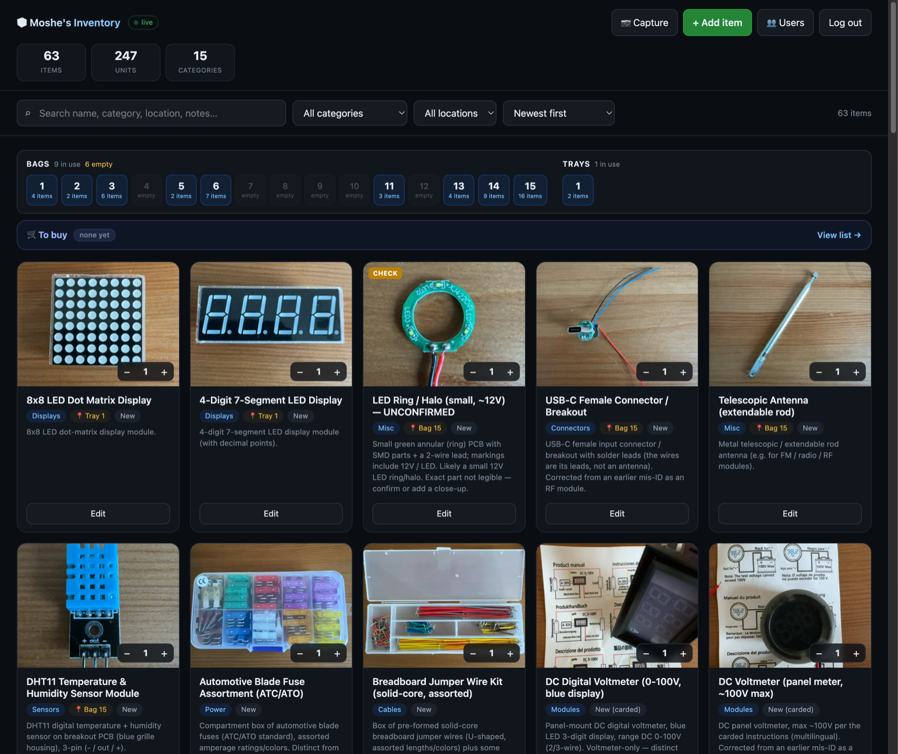
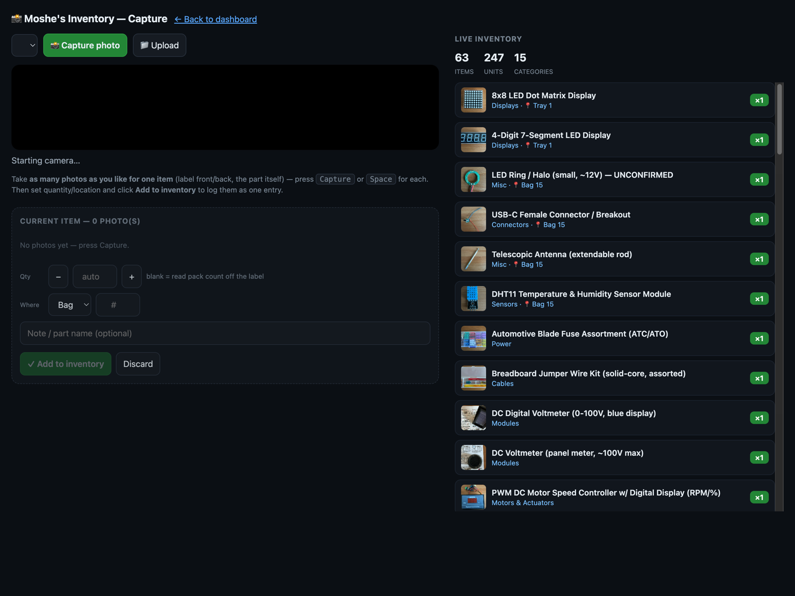
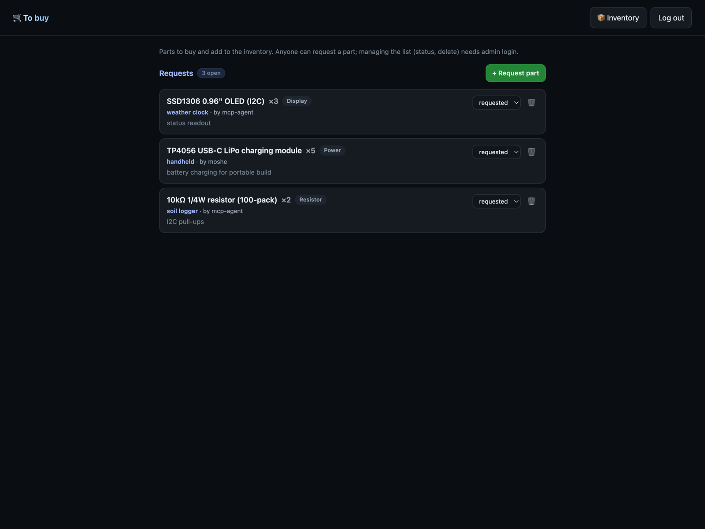

You never have the SKU. You have the part in your hand. Photograph it, drop it in a bag, and my-inventory turns that into a searchable, shareable catalog of everything in your bins, without a single dependency to install.

Most inventory tools ask for a part number you don't have. This one starts from the one honest record of what's in a bag: a picture of it.
A macro shot identifies a component faster than digging for a SKU that rubbed off the bag months ago. The image is the source of truth; names and specs are optional metadata.
Send a collaborator a read-only link to the whole catalog. Edit controls appear only after you log in. Auth stays off until you create the first admin.
python3 server.py and it's live. No Node, no pip, no database, no build pipeline. The same single file runs on your laptop or a $5 VPS.
From a part in your hand to a searchable entry your collaborator can see.
Point any webcam at it. A phone over macOS Continuity Camera works great. Take as many shots as you want for one item (the part, the label, the back of the board). Set a quantity and a bag, hit add.

The item lands on the dashboard with its photo as the thumbnail. Type the name yourself, or let an LLM read the photo and fill in name, category, condition and specs. Add the same part twice and it asks whether to top up the bag or file a new one.
Filter by category, location or free text, and read the bag/bin map at a glance. Keep a separate "to buy" list for parts you're out of. Its create endpoint is public, so an agent can request a component with no credentials.

No framework, no service mesh. Just the features you actually use to keep parts findable.
Multiple shots per item from any webcam. The photo that shows the part is automatically the card thumbnail; labels go after.
Anyone can browse. Editing is gated behind an admin login, persisted in the browser. Manage users from the dashboard.
Let an LLM agent watch new uploads, read the photo, and write back the name and specs, or skip it and type them.
Re-add a part you own and the app surfaces a card to top up, set, or split the stash. No silent double entries.
Track parts to purchase, separate from stock. Marking one bought closes the loop when you file the real part.
A stdlib MCP server exposes search, summary, item photos, and one public write so agents can request parts.
No dependencies to resolve. Clone it, run it, open the dashboard. Tested on Python 3.9+.
# clone and run, that's it git clone https://github.com/m-esm/my-inventory cd my-inventory python3 server.py # http://localhost:8770/dashboard # share it: same file behind Docker or Caddy (auto-HTTPS) docker compose up -d --build
A photo-driven parts inventory you can stand up in under a minute and actually keep using.